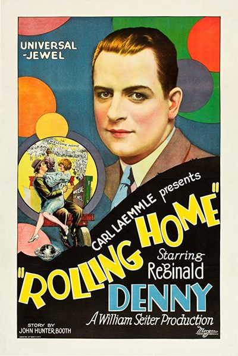
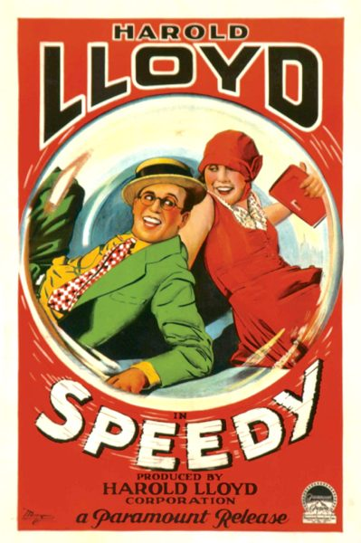

THE STANFORD THEATRE
Now Showing
·
Upcoming
·
Past
·
Search
June 9 - 13, 2025
100th Anniversary
5 bills
June 9
100th Anniversary
That's My Daddy (1928)
60 min
I'll Show You the Town (1925)
80 min
June 10

Rolling Home (1926)
70 min
The Freshman (1925)
76 min
June 11
Skinner's Dress Suit (1926)
Steamboat Bill, Jr. (1928)
71 min
June 12
Stage Struck (1925)
70 min

Speedy (1928)
85 min
June 13
The Crowd (1928)
104 min
Archived calendar page
·
Original
·
All past festivals